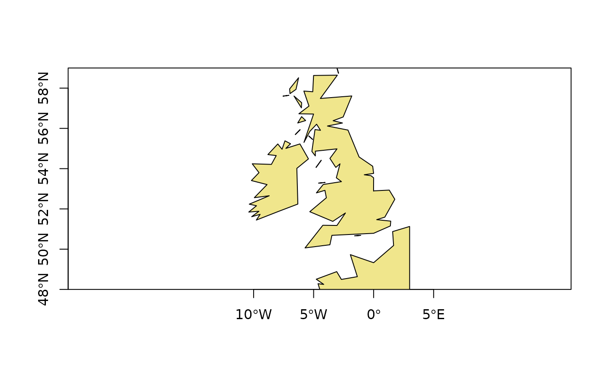
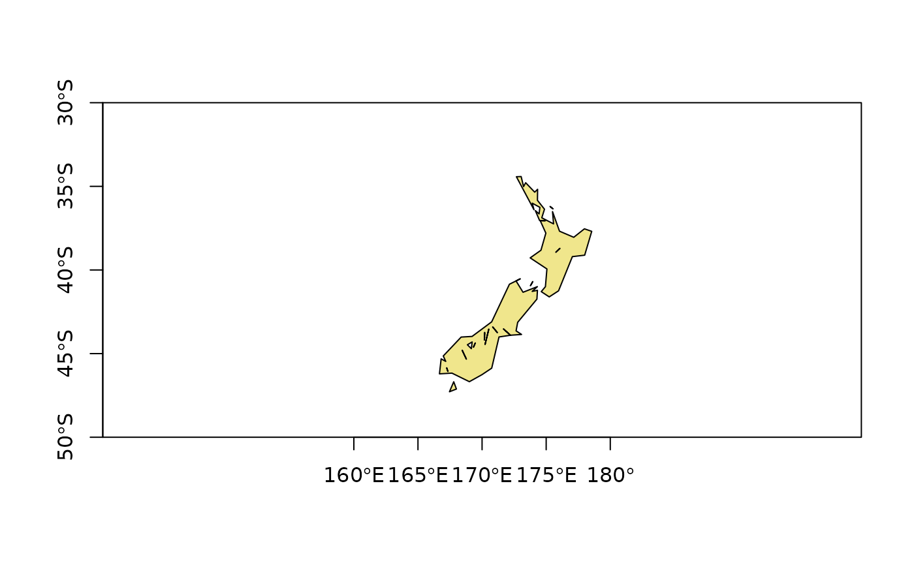
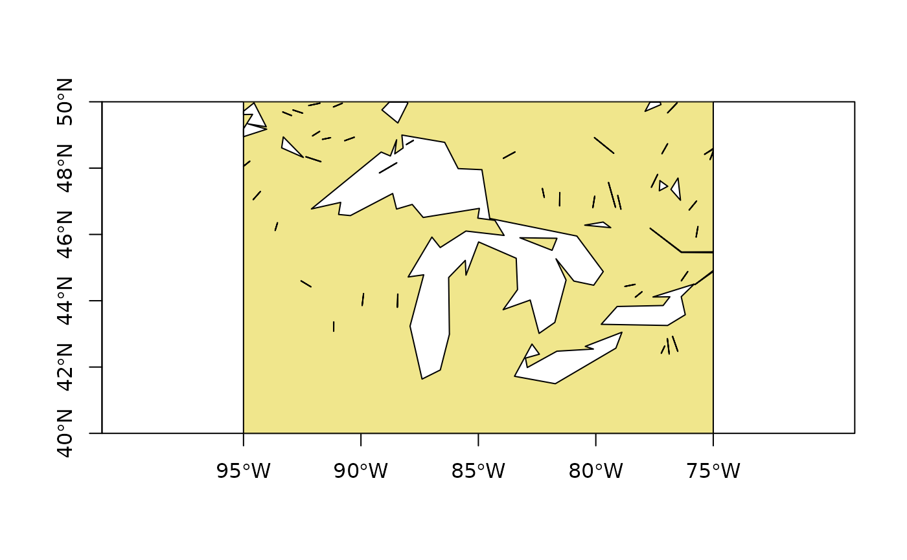
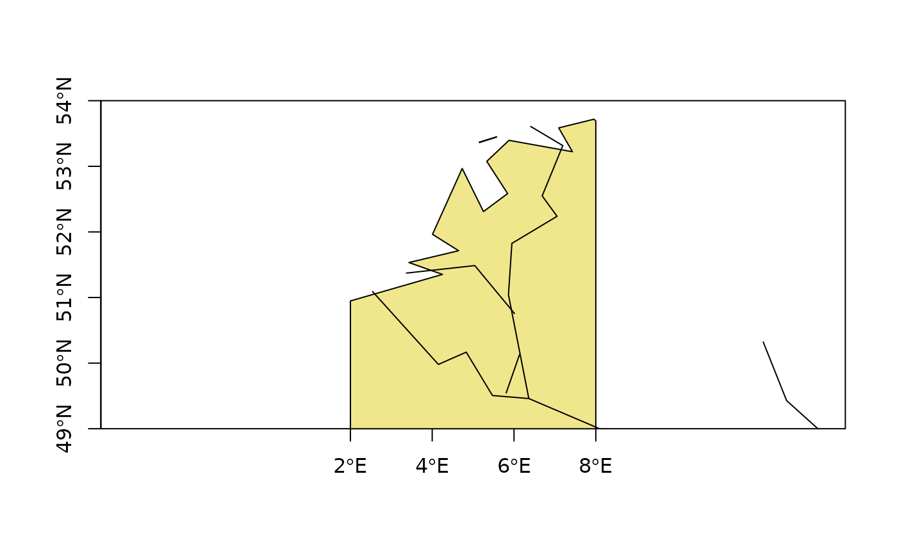

Rgshhs.RdIf the data are polygon data, the function will read GSHHS polygons into SpatialPolygons object for a chosen region, using binary shorelines from Global Self-consistant Hierarchical High-resolution (Shorelines) Geography, release 2.3.0 of February 1, 2014 (http://www.soest.hawaii.edu/pwessel/gshhg/gshhg-bin-2.3.0.zip).
The getRgshhsMap function calls Rgshhs internally to simplify the interface by returning only a SpatialPolygons object rather than a more complex list, and by calling Rgshhs twice either side of longitude 0 degrees for values of “xlim” straddling 0, then merging the polygons retrieved.
If the data are line data, the borders or river lines will be read into a SpatialLines object. The data are provided in integer form as millionths of decimal degrees. Reading of much earlier versions of the GSHHS binary files will fail with an error message. The netCDF GSHHS files distributed with GMT >= 4.2 cannot be read as they are in a very different format.
Rgshhs(fn, xlim = NULL, ylim = NULL, level = 4, minarea = 0, shift = FALSE, verbose = TRUE, no.clip = FALSE, properly=FALSE, avoidGEOS=FALSE, checkPolygons=FALSE) getRgshhsMap(fn = system.file("share/gshhs_c.b", package= "maptools"), xlim, ylim, level = 1, shift = TRUE, verbose = TRUE, no.clip = FALSE, properly=FALSE, avoidGEOS=FALSE, checkPolygons=FALSE)
| fn | filename or full path to GSHHS 2.3.0 file to be read |
|---|---|
| xlim | longitude limits within 0-360 in most cases, negative longitudes are also found east of the Atlantic, but the Americas are recorded as positive values |
| ylim | latitude limits |
| level | maximum GSHHS level to include, defaults to 4 (everything), setting 1 will only retrieve land, no lakes |
| minarea | minimum area in square km to retrieve, default 0 |
| shift | default FALSE, can be used to shift longitudes > 180 degrees to below zero, beware of artefacts involving unhandled polygon splitting at 180 degrees |
| verbose | default TRUE, print progress reports |
| no.clip | default FALSE, if TRUE, do not clip output polygons to bounding box |
| properly | default FALSE, if TRUE use |
| avoidGEOS | default FALSE; if TRUE force use of gpclib even when rgeos is available |
| checkPolygons | default FALSE, if TRUE, check using GEOS, which may re-order the member Polygon objects with respect to the returned polydata data frame rows |
The package is distributed with the coarse version of the shoreline data, and much more detailed versions may be downloaded from the referenced websites. The data is of high quality, matching the accuracy of SRTM shorelines for the full dataset (but not for inland waterbodies). In general, users will construct study region SpatialPolygons objects, which can then be exported (for example as a shapefile), or used in other R packages (such as PBSmapping). The largest land polygons take considerable time to clip to the study region, certainly many minutes for an extract from the full resolution data file including Eurasia (with Africa) or the Americas. For this reason, do not give up if nothing seems to be happening after the (verbose) message: "Rgshhs: clipping <m> of <n> polygons ..." appears. Clipping the largest polygons in full resolution also needs a good deal of memory.
for polygon data, a list with the following components:
data from the headers of the selected GSHHS polygons
a matrix showing which polygon belongs to (is included in) which polygon, going from the highest level among the selected polygons down to 1 (land); levels are: 1 land, 2 lake, 3 island\_in\_lake, 4 pond\_in\_island\_in\_lake.
a ragged list of polygon inclusion used for making SP
a SpatialPolygons object; this is the principal output object, and will become the only output object as the package matures
a SpatialLines object
http://www.soest.hawaii.edu/pwessel/gshhg/, http://www.soest.hawaii.edu/pwessel/gshhg/gshhg-bin-2.3.0.zip; Wessel, P., and W. H. F. Smith, A Global Self-consistent, Hierarchical, High-resolution Shoreline Database, J. Geophys. Res., 101, 8741-8743, 1996.
A number of steps are taken in this implementation that are unexpected, print messages, and so require explanation. Following the extraction of polygons intersecting the required region, a check is made to see if Antarctica is present. If it is, a new southern border is imposed at the southern ylim value or -90 if no ylim value is given. When clipping polygons seeming to intersect the required region boundary, it can happen that no polygon is left within the region (for example when the boundaries are overlaid, but also because the min/max polygon values in the header may not agree with the polygon itself (one case observed for a lake west of Groningen). The function then reports a null polygon. Another problem occurs when closed polygons are cut up during the finding of intersections between polygons and the required region boundary.
By default, if the rgeos package is available, it is used for topology operations. If it is not available, the gpclib package may be used. Please also note that gpclib has a restricted licence.
if (rgeosStatus()) { gshhs.c.b <- system.file("share/gshhs_c.b", package="maptools") WEx <- c(-12, 3) WEy <- c(48, 59) WE <- getRgshhsMap(gshhs.c.b, xlim=WEx, ylim=WEy) plot(WE, col="khaki", xlim=WEx, ylim=WEy, xaxs="i", yaxs="i", axes=TRUE) NZx <- c(160,180) NZy <- c(-50,-30) NZ <- Rgshhs(gshhs.c.b, xlim=NZx, ylim=NZy) plot(NZ$SP, col="khaki", pbg="azure2", xlim=NZx, ylim=NZy, xaxs="i", yaxs="i", axes=TRUE) GLx <- c(265,285) GLy <- c(40,50) GL <- Rgshhs(gshhs.c.b, xlim=GLx, ylim=GLy) plot(GL$SP, col="khaki", pbg="azure2", xlim=GLx, ylim=GLy, xaxs="i", yaxs="i", axes=TRUE) BNLx <- c(2,8) BNLy <- c(49,54) wdb_lines <- system.file("share/wdb_borders_c.b", package="maptools") BNLp <- Rgshhs(gshhs.c.b, xlim=BNLx, ylim=BNLy) BNLl <- Rgshhs(wdb_lines, xlim=BNLx, ylim=BNLy) plot(BNLp$SP, col="khaki", pbg="azure2", xlim=BNLx, ylim=BNLy, xaxs="i", yaxs="i", axes=TRUE) lines(BNLl$SP) xlims <- c(0,360) ylims <- c(-90,90) world <- Rgshhs(gshhs.c.b, xlim=xlims, ylim=ylims, level=1, checkPolygons=TRUE) }#> Data are polygon data #> Rgshhs: clipping 1 of 2 polygons ... #> Data are polygon data #> Rgshhs: clipping 1 of 11 polygons ...#> Data are polygon data#> Data are polygon data #> Rgshhs: clipping 9 of 49 polygons ...#> Data are polygon data #> Rgshhs: clipping 1 of 2 polygons ... #> Data are line data#> Data are polygon data #> Rgshhs: clipping 3 of 739 polygons ...